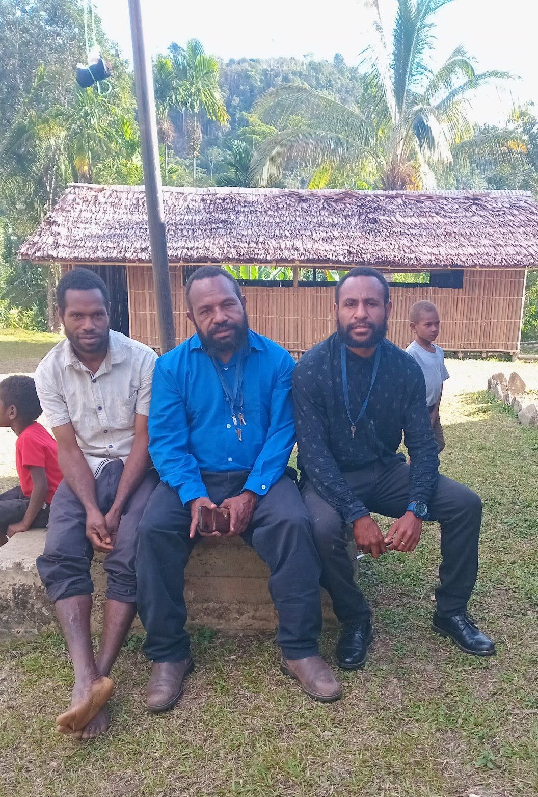

Taramugu is a rural village located in Milne Bay Province, Papua New Guinea. It is a populated place situated at approximately 9°51' South latitude and 149°39' East longitude, with an elevation of about 319 meters above sea level. The village is also known by the alternative spelling Taramuga. Taramugu is located inland from the coast and forms part of the rural communities of the Milne Bay region.
Taramugu is located in the interior area of Milne Bay Province. The nearest coastal settlement is Sirisiri. Travel between Sirisiri and Taramugu is mainly by foot using traditional village tracks and local transportation where available. Due to the mountainous and forested terrain, access can be challenging, particularly during periods of heavy rainfall.
Although an exact road distance cannot be confirmed from available sources, Taramugu is generally considered an inland community situated several kilometers from the coast, requiring travel through hilly terrain.
The estimated population of Taramugu is approximately 390 people. The community consists mainly of indigenous families who have lived in the area for generations. The population is spread across household clusters and relies heavily on family and clan-based social structures.
The estimated population of Taramugu is approximately 390 people. The community consists mainly of indigenous families who have lived in the area for generations. The population is spread across household clusters and relies heavily on family and clan-based social structures.
The primary language spoken in Taramugu is Umanakaina. This language is an important part of the community's cultural identity and is used in daily communication, traditional ceremonies, storytelling, and village gatherings. Tok Pisin and English may be understood by some residents, particularly those who have attended school.
Taramugu is blessed with a variety of natural resources, including:
Fertile land suitable for agriculture.
Forest resources providing timber, medicinal plants, and traditional building materials.
Freshwater streams and natural water sources.
Diverse plant and animal life that supports traditional livelihoods.
The surrounding environment provides essential resources for food production and daily living.
The people of Taramugu depend largely on subsistence farming and agriculture. Most families cultivate crops primarily for household consumption rather than commercial sale. Common crops include: Sweet potato Taro Yam Cassava Banana Vegetables Coconut Betel nut Small-scale livestock such as chickens and pigs are also raised. Agricultural activities provide food security and support traditional cultural practices.
Education remains a significant challenge for the community. Because most families rely on subsistence farming, household income is often limited. As a result: Not all children are enrolled in school. Some children leave school early to assist their families with gardening and farming activities. Transportation and educational costs can be barriers to continued education. Access to secondary and higher education opportunities is limited compared to urban areas. Improving educational access and awareness could contribute significantly to the long-term development of the village.
Taramugu has a strong communal culture where families work together in farming, house construction, and traditional ceremonies. Customs, traditional knowledge, and the Umanakaina language continue to play an important role in preserving the community's cultural heritage.
The village faces several development challenges, including: Limited infrastructure. Difficult transportation and communication networks. Restricted access to healthcare services. Limited educational opportunities. Dependence on subsistence agriculture.
Taramugu is a small rural village in Milne Bay Province with an estimated population of about 390 people. The community primarily speaks the Umanakaina language and depends on subsistence farming for its livelihood. While the village possesses fertile land and valuable natural resources, challenges related to education, infrastructure, and economic opportunities continue to affect its development. Strengthening access to education, healthcare, and transportation could improve the quality of life for the people of Taramugu while preserving their unique cultural heritage.

The Teachers of the Taramugu Community School